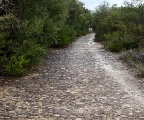

2024 Newsletters
If you would like to receive North Head Sanctuary Foundation newsletters via your email, just ask to be put on the mailing list by contacting:
northhead@fastmail.com.au

Avenue of Honour
Photo: Jan Ritchie
January 2024
A Heritage Road at North Head? During one of our Foundation's spring wildflower walks for community members led by Geoff and Judy Lambert, the group found themselves on the wide path built along the coastal side of the headland's dune system, marked on the map as the Avenue of Honour. The group was surprised to hear one of the participants exclaim with reverence that they were walking on a 'Telford road'! What, you may ask, is a Telford road? And also, what actually is an Avenue of Honour?

Command Post
February 2024
North Head echidna survey; North Head Bush regeneration; Observation and Command Posts; In the year 1900, Bubonic Plague took several people who were subsequently buried on North Head.

Volunteer weeders
March 2024
Meeting March 2 with speaker, Mark Tozer, an ecologist; Volunteers clearing the Frog Hollow; Information about echidnas; Sericornis frontalis - White-browed Scrubwren; Committees formed in 1900 to help stamp out the plague.

Working on cuttings
April 2024
Education room; Native Plant volunteers - call in any Tuesday or Friday morning to visit between 8 and 12; Pampas Grass - pest weed; Garigal Landcare volunteers have been doing magnificent work removing Pampas Grass. Banksia aemula is a valued plant and Nursery volunteers have been propagating them.

Diamond python
May 2024
Plantings over 15 years are providing habitat for echidnas and diamond pythons; Cassia (or Senna pendula) is a weed shrub on North Head; Quarantine Station open day is on May 19; More buses on the North Head route; Ochrogaster lunifers are grey and hairy caterpillars that travel in a long line nose to tail; Quarantine events in 1900 - new plague cases.

FT Morgan's headstone
June 2024
General Meeting June 15 Speaker: Alana Guest, Anderson Environment & Planning's ecologist; 3yr agreement for space at North Head; Fungi - North Head and Beyond; Weeding on North Head; Back in time - testing guns on North Head; Death of Pte F.T. Morgan from influenza in 1918.

Nursery volunteers

Jenny working in Nursery
July 2024
Jenny Wilson passed away on May 30, 2024 and she will be greatly missed. This newsletter is a special edition to honour the many contributions Jenny Wilson has made to the work of North Head Sanctuary Foundation over many years.

Southern viewing platform. Photo: Ian Evans
August 2024
The Annual General Meeting will be held at Bandicott Heaven at 2pm on Saturday 21 September. Dates of upcoming walks are listed.

Cranbrook House & Lodge NSW State Library
Sep / Oct 2024
Bootlace Orchids, reflections from a volunteer and a 7-year old boy killed by Bubonic Plague.

Surprise Kindy visit
Nov / Dec 2024
The old oval, Eastern Suburbs Banksia scrub and the Third Quarantine Cemetery.